Introducción al diseño de software
Cuando alguien decide construir una casa, lo primero que encarga no son ladrillos ni cemento, sino un plano. Ese plano fija cuántas habitaciones habrá, por dónde discurrirá la instalación eléctrica y qué muros soportarán la estructura. Sin él, cada gremio trabajaría a su aire y el resultado sólo se descubriría al final, cuando ya no queda margen para rectificar. En el desarrollo de software ocurre algo muy parecido: entre saber qué tiene que hacer un programa y escribir las líneas de código que lo hacen, existe una fase intermedia que decide cómo se va a construir. Esa fase es el diseño.
El diseño se apoya siempre en el resultado de la fase anterior, el análisis de requerimientos. Si el análisis ha dejado claro qué necesita el usuario, el diseño traduce esas necesidades a una estructura técnica concreta: qué piezas formarán el sistema, cómo se relacionarán entre ellas y qué responsabilidad asumirá cada una. Un proyecto bien diseñado resulta más caro de preparar, porque consume tiempo y recursos antes de que exista la primera línea de código ejecutable, pero esa inversión se recupera con creces más adelante. Cuando el diseño está bien hecho y se apoya en herramientas de generación automática o semiautomática de código, buena parte del programa nace del propio modelo, y lo que antes era picar línea a línea se convierte en revisar y completar. La balanza, por tanto, se inclina casi siempre del lado del diseño.
Hay una segunda idea que conviene fijar desde el principio: el diseño no es un trámite aislado, sino que debe estar en sintonía con la metodología de desarrollo escogida. En un proyecto gestionado con una metodología ágil, el diseño no se cierra de una vez para siempre, sino que se ajusta en ciclos cortos a medida que el producto crece. En un proyecto gobernado por una metodología predictiva, el diseño se elabora y se valida antes de empezar a codificar. En los dos casos existe, lo único que cambia es el momento en que se aborda y el grado de detalle con el que se documenta.
Durante muchos años la forma dominante de diseñar fue el diseño estructurado, heredero directo de la programación modular. Hoy ese enfoque sigue vivo en algunos proyectos, pero la industria se ha movido de forma mayoritaria hacia el diseño orientado a objetos. En este apartado trabajaremos precisamente ese segundo camino, y lo haremos con el lenguaje de modelado que se ha convertido en estándar universal: UML.
El análisis y el diseño orientado a objetos
La creación de una aplicación informática puede considerarse, sin exagerar, una obra de ingeniería. De hecho, hace décadas que se habla de ingeniería del software, una de las áreas más importantes de la informática, que agrupa el conjunto de metodologías, técnicas y herramientas destinadas a facilitar el trabajo en todas y cada una de las fases de un proyecto.
Esa disciplina ha evolucionado de forma continua, adaptándose a las nuevas tecnologías y a las nuevas formas de trabajar. En la década de los setenta, con la generalización de la programación en las organizaciones y la aparición de la figura del programador, existía un único objetivo: que la aplicación hiciera lo que tenía que hacer, optimizando la velocidad y el consumo de memoria. En aquellos primeros programas nadie se preocupaba por el mantenimiento futuro ni por si el código resultaba fácil de entender para otra persona. El programa se escribía, se entregaba y, si funcionaba, el trabajo estaba terminado.
Con los años, las aplicaciones empezaron a pedir cada vez más funcionalidades y el desarrollo se volvió más complejo a medida que mejoraban el hardware y el software disponibles. La programación evolucionó entonces hacia la programación estructurada, organizada en módulos, mucho más sencilla de entender y de mantener. A mediados y finales de los setenta aparecieron las primeras metodologías, y su motivo era muy concreto: construir el código a base de improvisaciones e intuiciones pone el proyecto entero en riesgo. Aparecen entonces funcionalidades poco eficaces, errores que no responden a lo que pedían las especificaciones y decisiones que nadie puede justificar después. Las metodologías recogen la experiencia acumulada de muchos proyectos y ofrecen una serie de pasos ordenados para desarrollar software con garantías. Entre esos pasos está, precisamente, la división del trabajo en fases, y una de ellas es el diseño.
El diseño estructurado
El diseño estructurado, también llamado diseño orientado al flujo de datos, establece la transición desde el Diagrama de Flujo de Datos (DFD) hacia una descripción de la estructura del programa, que se representa mediante un diagrama de estructuras. La lógica es sencilla: primero se dibuja por dónde viaja la información dentro del sistema y qué transformaciones sufre en cada punto; después, ese recorrido se traduce en una jerarquía de módulos que la implementan. Las herramientas que facilitan y automatizan este tipo de diseño se conocen como herramientas CASE (Computer Aided Software Engineering).
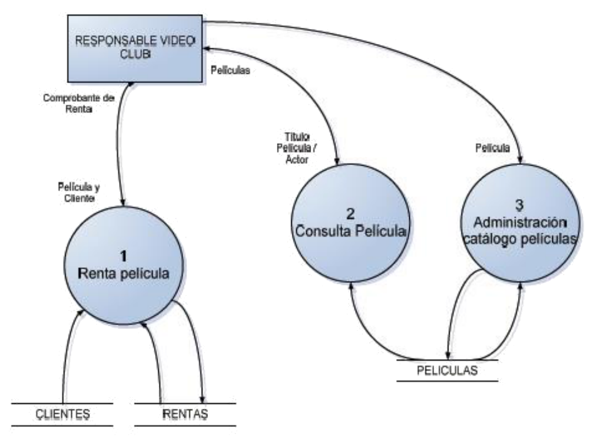
En el diagrama anterior se ve el funcionamiento del alquiler de películas en un videoclub. Los círculos representan procesos que transforman datos, los rectángulos abiertos representan los almacenes de información y las flechas indican por dónde circula cada dato entre ellos. Es una fotografía muy útil del movimiento de la información, y durante años fue la manera estándar de empezar un proyecto.
El problema del diseño estructurado aparece cuando el sistema crece. La unidad de trabajo es el proceso, no el dato, así que los datos viajan de un módulo a otro sin que ningún módulo sea su dueño. Si más adelante hay que añadir un campo al alquiler, ese cambio obliga a revisar todos los módulos por los que pasa la información. El diseño funciona, pero cada modificación se convierte en una operación delicada que puede tocar media aplicación.
El giro hacia la programación orientada a objetos
A partir de los años ochenta empieza a imponerse la programación orientada a objetos. La base ya no son las estructuras ni los módulos, sino las clases y los objetos. En lugar de organizar el programa por procesos, se organiza por responsables: cada clase agrupa los datos que le pertenecen y las operaciones que sabe hacer con ellos, y el resto del sistema sólo puede pedirle cosas a través de esa frontera.
La analogía que mejor describe el cambio es la de un taller artesanal comparado con un equipo de especialistas. En el taller artesanal, una sola persona sigue todo el proceso y conoce cada paso de memoria; si enferma o se marcha, nadie sabe continuar el trabajo. En el equipo de especialistas, cada uno domina su oficio, recibe un encargo concreto y devuelve un resultado; sustituir a uno de ellos no desmonta la cadena. La programación orientada a objetos traslada esa idea al código: los objetos son los especialistas, cada uno con su información interna bien guardada y con una lista pública de lo que sabe hacer.
Al cabo de unos años de ganar terreno entre los desarrolladores, la orientación a objetos arrastró consigo una serie de prácticas que hoy nos resultan familiares:
- Modelización de sistemas orientados a objetos: representar el sistema como un conjunto de clases y relaciones antes de escribir código.
- Diseño orientado a objetos: decidir la estructura del software pensando en objetos desde el primer boceto.
- Generación automática de código: obtener el esqueleto del programa directamente desde el modelo gráfico.
- Metodologías ágiles: formas de gestión que asumen que los requisitos cambian y que el software debe entregarse en incrementos cortos.
En la actualidad conviven tres grandes familias de tecnologías de desarrollo: las metodologías estructuradas, las metodologías orientadas a objetos y las metodologías ágiles. Dejando la tercera aparte, porque afecta más a la gestión que al diseño, las dos primeras comparten una estructura de fases muy parecida, aunque con nombres y matices distintos según el autor que se consulte.
Las fases de un proyecto
Aunque las propuestas de fases varían de un autor a otro, la mayoría coinciden en un esquema común. El resumen sería el siguiente.
| Fase | Qué se decide en ella | Resultado que deja |
|---|---|---|
| Estudio previo | Se delimita el ámbito del proyecto y se evalúan viabilidad, riesgos, costes y calendario | Un estudio de viabilidad del proyecto |
| Análisis de requerimientos | Se describen con precisión las necesidades de información que el software debe satisfacer | Un catálogo de requisitos funcionales y no funcionales |
| Diseño | Se proyecta el software para un entorno tecnológico concreto (lenguaje, IDE, gestor de bases de datos) | El modelo del sistema listo para implementar |
| Desarrollo y pruebas | Se escribe el código que cumple lo definido en las fases anteriores y se verifica su funcionamiento | El software funcionando y probado |
| Finalización y transferencia | Se prepara el software para su explotación y su mantenimiento posterior | El sistema en producción, mantenido en el tiempo |
El estudio previo delimita el ámbito del proyecto y determina si merece la pena llevarlo a cabo, con qué riesgos, con qué coste y en cuánto tiempo. El análisis de requerimientos describe de manera adecuada los requisitos del software, es decir, las necesidades de información que debe satisfacer. Esta fase tiene que dejar muy claro qué se quiere hacer a partir del estudio de un problema determinado, y los requisitos recogidos deben ser funcionales y no funcionales. Además, deben ser independientes de la tecnología y del tipo de programación escogidos: todavía no toca hablar de lenguajes ni de bases de datos.
El diseño proyecta el software ya pensando en un entorno tecnológico concreto, definido por aspectos como el lenguaje de programación, el entorno de desarrollo y el gestor de bases de datos, de los que puede intervenir más de uno dentro de un mismo proyecto. A partir del qué definido en la fase anterior, el diseño determina el cómo. Todas las decisiones que se tomen aquí tendrán consecuencias en las fases siguientes, así que el detalle debe ser suficientemente fino como para que otra persona pueda desarrollar el proyecto partiendo de esas indicaciones.
En la fase de desarrollo y pruebas se lleva a cabo la codificación del código fuente que satisface las funcionalidades establecidas antes. Conviene aclarar que esta fase no se limita a escribir código a mano: también incluye la programación gráfica, la generación automática de código, la configuración de herramientas y otras técnicas. Además, incorpora las pruebas del software. No hay que imaginarla como un bloque monolítico, porque algunas partes de la programación pueden empezar antes de que el diseño esté terminado del todo, y ciertas partes pueden probarse mientras se acaban de implementar otras.
La última fase, finalización y transferencia, prepara el software para que esté en explotación. A partir de ese momento el sistema pasa a ser objeto de mantenimiento, con tres objetivos permanentes: eliminar los errores que no se corrigieron durante las pruebas, introducir mejoras y adaptarlo a los cambios tecnológicos y organizativos que se produzcan en el entorno de trabajo de los usuarios.
Un modelo adecuado evita situaciones tan habituales como la que ilustra la siguiente figura, donde se aprecian las diferencias de entendimiento entre las partes y las fases implicadas en la gestión de un proyecto informático.
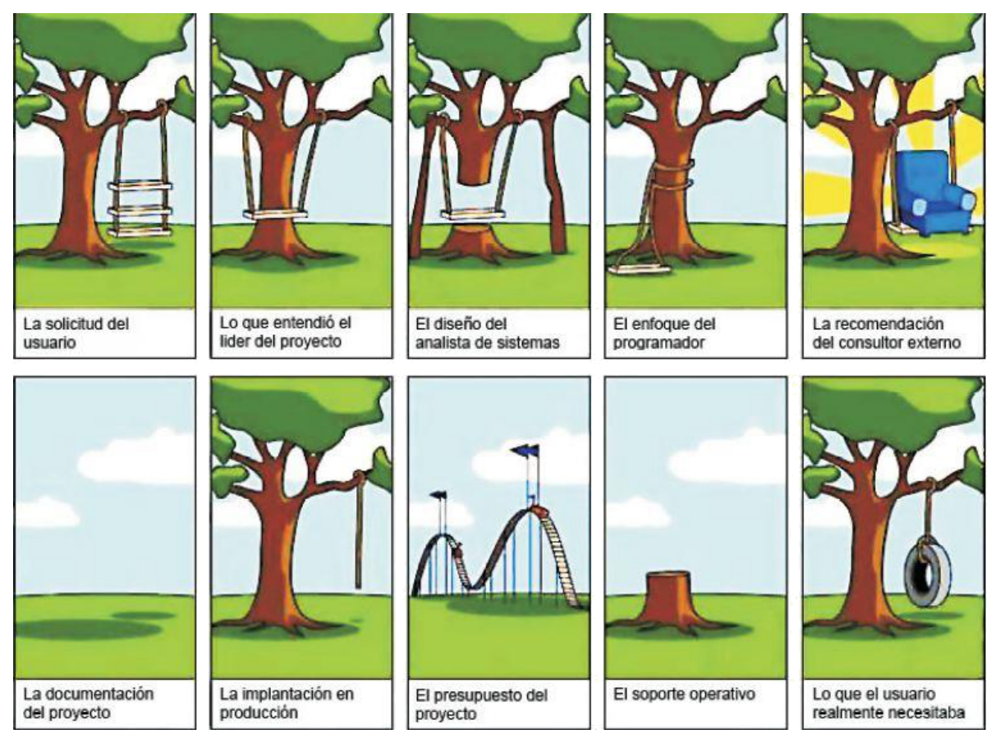
La viñeta resume un clásico de la ingeniería del software: el usuario explica lo que necesita, el jefe de proyecto interpreta una cosa, el analista diseña otra, el programador construye una tercera y el consultor externo recomienda algo distinto todavía. El resultado final no se parece a lo que el usuario esperaba, y el columpio del dibujo es la mejor metáfora de lo que ocurre cuando cada fase trabaja con una idea distinta del producto. Un modelo compartido, escrito y verificable es lo que rompe esa cadena de malentendidos, y de ahí la importancia de UML.
El Lenguaje Unificado de Modelado (UML)
UML es el acrónimo inglés de Unified Modeling Language, es decir, Lenguaje Unificado de Modelado. No es un programa ni un lenguaje de programación: es un conjunto de notaciones gráficas que sirven para especificar, diseñar, elaborar y documentar modelos de sistemas y, en particular, de aplicaciones informáticas. A partir de esas notaciones gráficas, el analista y el diseñador pueden plasmar las características que deberá tener la aplicación que los desarrolladores construirán después.
En la actualidad es el lenguaje de modelado de sistemas más conocido y utilizado. Disfruta de una aceptación casi universal y ha tenido un efecto muy concreto en la industria: ha impulsado el desarrollo de herramientas de modelado gráfico de software orientado a objetos. Además, está reconocido y recomendado por la OMG (Object Management Group), un consorcio fundado en 1989 con el objetivo de fomentar el uso de la tecnología orientada a objetos mediante el establecimiento de estándares.
Las ventajas de la notación UML son las siguientes:
- Está respaldada por la OMG como notación estándar para el desarrollo de proyectos informáticos.
- Se basa en una notación gráfica concreta y fácil de interpretar, que además se completa con explicaciones escritas.
- Permite al analista o al diseñador hacer uso de los diagramas que considere oportunos y con el grado de detalle que estime conveniente, en función de las características del sistema.
- Ofrece una visión global del sistema a implementar.
- Promueve la reutilización de elementos y de modelos.
Entre sus desventajas conviene ser honesto:
- UML no es una metodología, es una notación. No dice cómo trabajar ni en qué orden, sólo cómo dibujar.
- UML no es un lenguaje de programación, así que no se puede ejecutar directamente.
- Puede resultar complejo llegar a conocer en profundidad todas las posibilidades del lenguaje.
Esa primera advertencia es la que más confunde al principio. Aprender UML no es aprender a programar mejor ni a gestionar un proyecto, sino aprender a dibujar el plano con un vocabulario que cualquier otro profesional del sector entenderá igual que nosotros.
Los catorce diagramas de UML
En su versión 2.4.1, UML define un total de catorce tipos de diagramas distintos. Tener catorce opciones puede sonar abrumador, pero todas ellas responden a dos preguntas muy simples: cómo es el sistema por dentro y qué hace cuando está en marcha. De esa distinción nacen las dos grandes visiones del modelo.
La visión estática (o estructural) se construye con objetos, atributos, operaciones y relaciones. Da valor a los elementos que se encontrarán en el modelo del sistema desde el punto de vista de su estructura. Describe aspectos que son estructurales y, por tanto, permanentes: aquello que el sistema tiene.
La visión dinámica (o de comportamiento) da valor al comportamiento del sistema, es decir, a aquello que tiene que pasar en él. Con los diagramas de comportamiento se muestra cómo colaboran los elementos del sistema entre sí y cómo cambian de estado. Representan aquello que el sistema puede hacer.
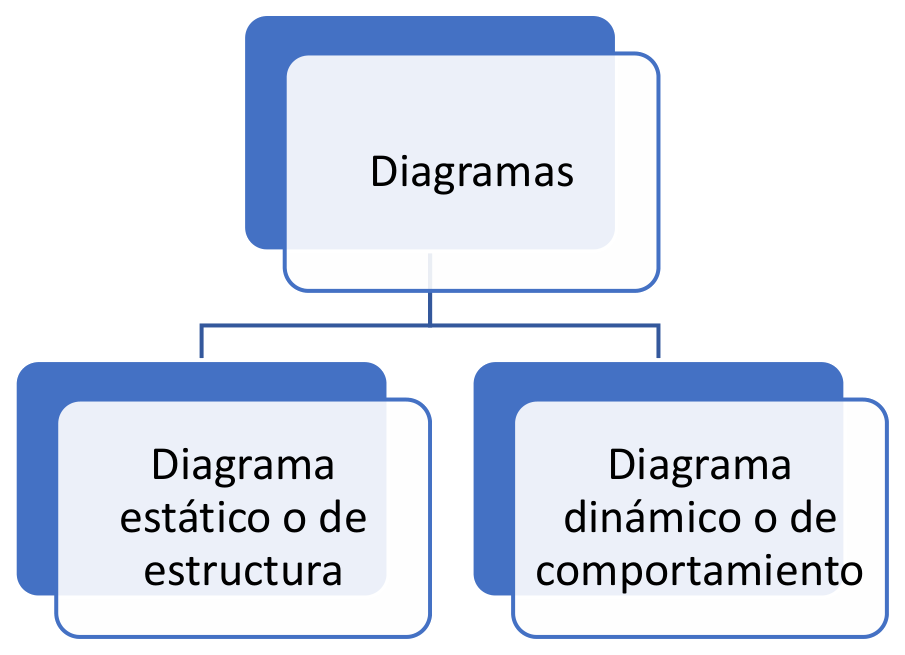
La comparación útil aquí es la de un esqueleto frente a una grabación en vídeo. El esqueleto dice cuántos huesos hay, cómo se llaman y cómo se articulan entre ellos, pero no dice nada de cómo camina la persona. El vídeo muestra el movimiento, pero sin el esqueleto no se entiende por qué la pierna puede doblarse en esa dirección y no en otra. Diseñar un sistema con UML consiste en producir las dos cosas: el esqueleto con los diagramas de estructura y la grabación con los de comportamiento.
Los diagramas de estructura
Dentro de los diagramas estáticos o de estructura podemos encontrar siete tipos:
- Diagrama de paquetes: refleja la organización de los paquetes y de los elementos que contienen.
- Diagrama de clases: describe clases de todo tipo y los diferentes tipos de relaciones entre ellas. Es el que probablemente más gente considera el diagrama principal de UML.
- Diagrama de objetos: representa instancias de clases (objetos) definidas previamente en un diagrama de clases, junto con las relaciones entre esas instancias.
- Diagrama de estructuras compuestas: describe los casos en que las instancias de una clase tienen como partes instancias de otras, o bien en que en el comportamiento de una clase participan instancias de otras.
- Diagrama de componentes: es un diagrama de clases y de estructuras compuestas simplificado, más adecuado para determinadas tecnologías de programación.
- Diagrama de despliegue: describe la configuración en tiempo de ejecución de un software especificado normalmente por un diagrama de componentes, y también el hardware físico sobre el que ese software se ejecutará.
- Diagrama de perfil: permite adaptar o personalizar el modelo con construcciones específicas de un dominio concreto, de una plataforma determinada o de un método de desarrollo.
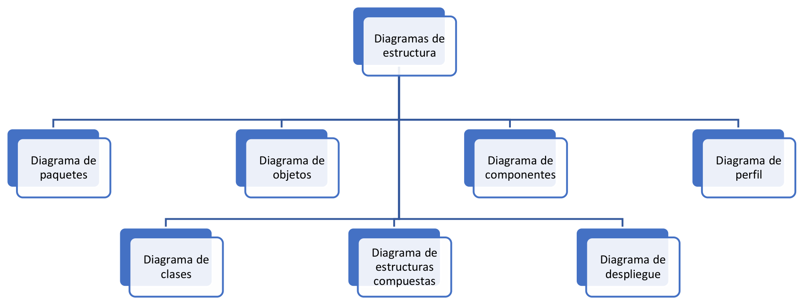
El árbol anterior resume la relación entre los siete. A continuación repasamos cada uno con un poco más de detalle, dejando el diagrama de clases para el siguiente apartado, donde lo estudiaremos a fondo.
Diagrama de paquetes
Un paquete permite organizar los elementos del modelo en grupos relacionados semánticamente. Un paquete no tiene un significado propio: es una caja, no un concepto del negocio. Su utilidad es la misma que la de las carpetas en el sistema de archivos, evitar que un proyecto con cientos de clases se convierta en una lista plana imposible de recorrer. El diagrama de paquetes describe la estructura del modelo en términos de paquetes interrelacionados.
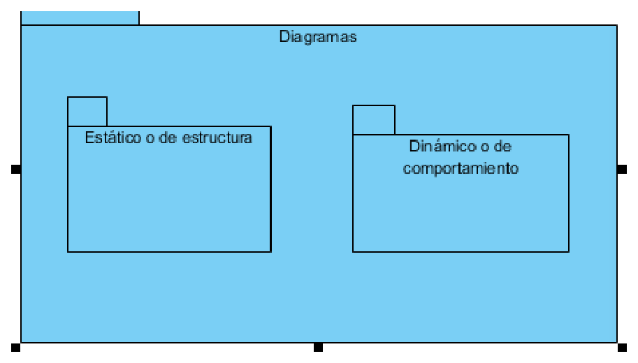
En la figura se ha representado un paquete llamado Diagramas que contiene a su vez dos paquetes: el estático o de estructura y el dinámico o de comportamiento. La forma de la carpeta con una pestaña es la notación habitual de un paquete, y el anidamiento visual indica la contención. Las herramientas de modelado permiten además editar esa jerarquía desde una ventana de propiedades, sin tener que dibujarla a mano.
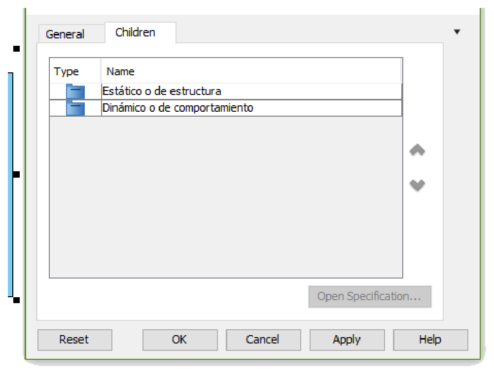
En la ventana de especificación se ve la pestaña Children, es decir, los hijos del paquete. Ahí aparecen los dos paquetes internos con su tipo, y desde el botón Open Specification se puede profundizar en cualquiera de ellos. Es el equivalente de abrir una carpeta del proyecto en el explorador de archivos: el diagrama muestra la estructura, la ventana muestra los detalles del elemento seleccionado.
Diagrama de clases
El diagrama de clases representa las clases que serán utilizadas dentro del sistema y las relaciones que existen entre ellas. Es la pieza central del UML estático, hasta el punto de que muchos autores lo consideran el diagrama principal. Se utiliza durante las fases de análisis y de diseño, y es el momento en que se empieza a crear el modelo conceptual de los datos que usará el sistema. Lo estudiaremos con detalle en el apartado siguiente, así que aquí basta con dejar anotado su papel: describe con precisión qué piezas habrá y cómo se conectarán.
Diagrama de objetos
Un objeto es una instancia de una clase, por lo que el diagrama de objetos se puede entender como una instantánea de un diagrama de clases en un momento concreto de la ejecución. Sólo puede contener instancias y las relaciones entre ellas (enlaces y dependencias), y los clasificadores y asociaciones que utilice tienen que haber sido definidos antes en un diagrama de clases. Su función habitual es ejemplificar un diagrama de clases o una parte de él, y también lo veremos en detalle en el apartado siguiente.
Diagrama de estructuras compuestas
Una estructura compuesta es un conjunto de elementos interconectados que colaboran en tiempo de ejecución para conseguir algún propósito. La finalidad de este diagrama es describir objetos compuestos con la máxima precisión posible, y complementa al diagrama de clases.
Para entender por qué UML necesitó este diagrama, sirve un ejemplo. Imaginemos un sistema que modela una videoconsola y una minicadena, ambas compuestas por una CPU. En la videoconsola esa CPU procesa el juego para mostrarlo en un dispositivo de salida, como un televisor, mientras que en la minicadena procesa la música para que pueda escucharse. Una primera aproximación podría dibujarse así:
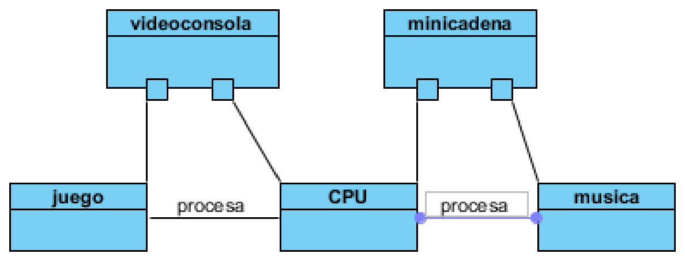
El dibujo, no obstante, es ambiguo: al compartir el mismo tipo de pieza, cualquiera puede interpretar que la CPU de la minicadena también podría procesar juegos. UML 2.0 introdujo el diagrama de estructura compuesta precisamente para concretar qué partes componen cada clase y con qué alcance. Con él, el sistema queda representado delimitando claramente el ámbito de la videoconsola y el de la minicadena.
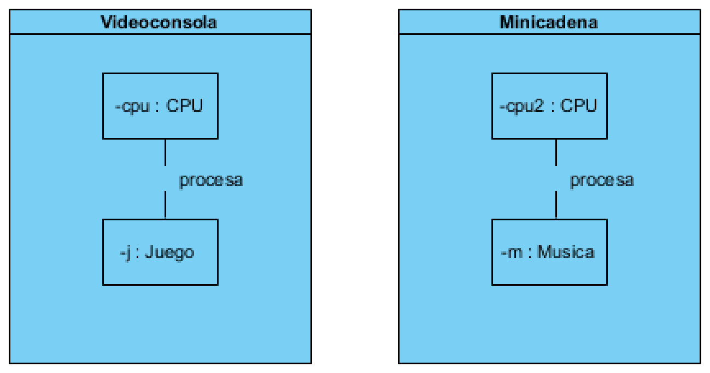
Cada rectángulo grande representa ahora el compuesto, y las cajas internas, con nombres como cpu : CPU o j : Juego, representan los roles que esas partes juegan dentro del compuesto. La consecuencia práctica es que ya no hay ambigüedad posible: la CPU de la minicadena está encerrada en el contexto de la minicadena y no puede procesar juegos.
Diagrama de componentes
Un componente es una pieza del software que conforma el sistema, y que además puede ser reutilizable y fácilmente sustituible. Un componente suele hacer uso de una interfaz, que define las operaciones que el componente implementará. El diagrama de componentes muestra qué componentes conforman el sistema y cómo se relacionan entre sí.
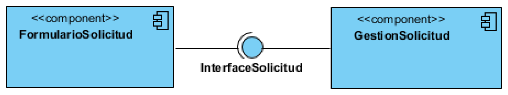
En el ejemplo, FormularioSolicitud y GestionSolicitud son dos componentes conectados a través de la interfaz InterfaceSolicitud. El símbolo del pequeño conector con un semicírculo o un círculo es la notación de una interfaz provista o requerida. La idea de fondo es la misma que la de un puerto USB: mientras se respete la forma del conector, se puede cambiar un dispositivo por otro sin tocar el resto del ordenador.
Diagrama de despliegue
El diagrama de despliegue describe la distribución de las partes de una aplicación y sus interrelaciones, todo ello en tiempo de ejecución. Dicho de otra forma, describe la configuración de un sistema de software en ejecución en términos de recursos de hardware y de los componentes de software, procesos y objetos que se alojan en ellos, ya sea en memoria o almacenados en bases de datos.
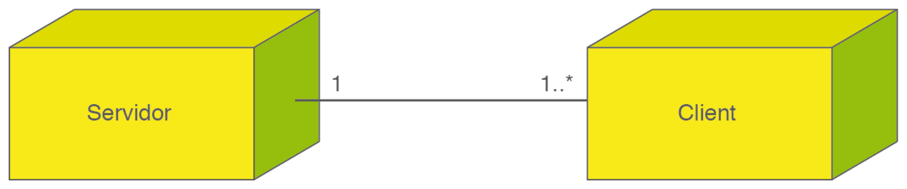
Aquí aparecen los nodos Servidor y Cliente, considerados a nivel de clasificador, unidos por una línea de comunicaciones. La multiplicidad indica que cada instancia de Cliente puede intercambiar información con una sola instancia de Servidor, mientras que una instancia de Servidor puede atender al menos a una instancia de Cliente, pero también a muchas más. Es el plano de la instalación, el momento en que el diseño deja de hablar de clases y empieza a hablar de máquinas.
Un artefacto puede desplegarse dentro de un nodo de dos maneras: incluyendo el símbolo del artefacto dentro del nodo, o dibujando el despliegue del artefacto hacia el nodo. La figura siguiente muestra un ejemplo de cada opción, la primera con instancias y la segunda con clasificadores.
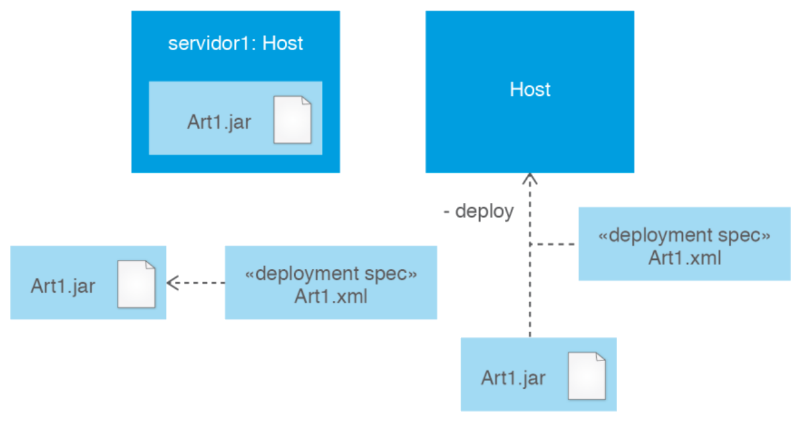
Diagrama de perfil
El diagrama de perfil permite adaptar o personalizar el modelo con construcciones específicas de un dominio particular, de una plataforma determinada o de un método concreto de desarrollo de software. Es el mecanismo que tiene UML para extenderse sin romper el estándar, y se apoya en estereotipos que añaden significado a los elementos habituales. No lo usaremos en este curso, pero conviene saber que existe: es la respuesta de UML a la pregunta de qué hacer cuando el vocabulario estándar se queda corto.
Los diagramas de comportamiento
La otra mitad de UML es la familia de los diagramas de comportamiento, formada por siete tipos que describen lo que el sistema hace en lugar de lo que tiene. A ella pertenecen el diagrama de casos de uso, el de estados, el de actividades y las cuatro variantes del diagrama de interacción, que son los diagramas de secuencias, de comunicaciones, de visión general de la interacción y temporal.
Esa familia no se trabaja en este apartado. Tiene el suyo propio, Diagramas de comportamiento, porque responde a un resultado de aprendizaje distinto y maneja un vocabulario que aquí no hace falta: actores, escenarios, líneas de vida, activaciones, eventos y transiciones. Lo que sí conviene retener ahora es la dependencia que existe entre las dos familias. Los diagramas de comportamiento se construyen sobre los de estructura, nunca antes: para describir cómo un objeto envía un mensaje a otro hay que saber primero qué objetos existen y qué operaciones ofrecen, y esa información la proporciona el diagrama de clases.
Ese es exactamente el motivo de que este apartado continúe con la pieza que sostiene todo lo demás, el diagrama de clases. En las páginas siguientes aprenderemos a decidir qué elementos forman el sistema, cómo se llaman, qué guardan, qué saben hacer y cómo se relacionan entre ellos. Con ese esqueleto dibujado, describir después el comportamiento deja de ser un ejercicio de imaginación y se convierte en una consecuencia del propio modelo.